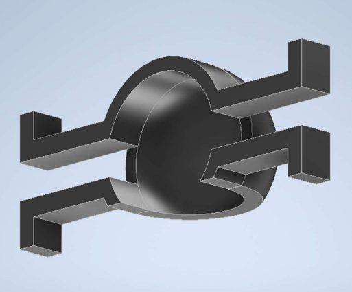
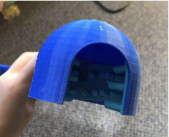
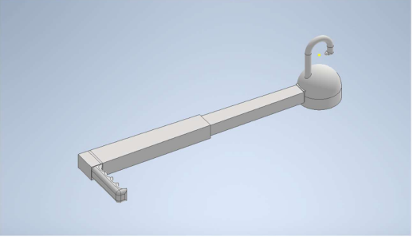

Designed and prototyped an assistive device that enables wheelchair users with multiple sclerosis to independently open doors — featuring telescoping reach, a multi-grip mechanism for different door hardware, and 3D-printed components optimized for limited hand strength.



For wheelchair users with multiple sclerosis, something as routine as opening a door can be a significant barrier to independence. Reduced grip strength, limited reach from a seated position, and the variety of door hardware types (round knobs, lever handles, push bars) create a compounding accessibility challenge that existing assistive devices don't fully address.
The device needed to satisfy several competing constraints:
The first iteration used a simple hook-and-pull concept, but user testing revealed it couldn't handle round knobs effectively. The design evolved through multiple iterations into a telescoping shaft with a dual-purpose end effector: claws that grip round doorknobs and a silicone-padded dome that provides friction for lever handles and flat surfaces.
The telescoping mechanism allows the device to extend for door operation and collapse for wheelchair-side storage. The handle was designed with an ergonomic profile that requires minimal grip force, using a larger diameter than conventional tools to distribute pressure across the palm.
The grip mechanism and handle were prototyped using FDM 3D printing, allowing rapid iteration on the claw geometry and dome profile. CAD modelling was done in Autodesk Inventor with iterative refinements based on physical testing against different door hardware types. The silicone padding was added after testing showed that rigid plastic alone didn't provide enough friction on polished lever handles.
The final prototype successfully operates across all target door types — round knobs, lever handles, and push/pull doors — while remaining compact enough for daily wheelchair use. The project demonstrated a full human-centered design process from user needs analysis through iterative prototyping to a functional assistive device.